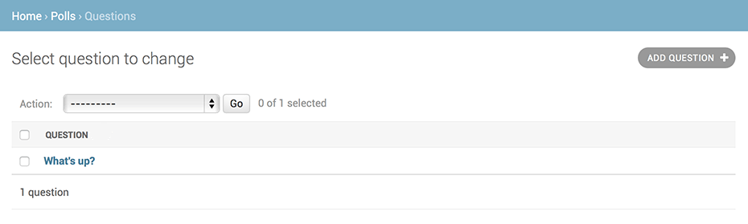

Écriture de votre première application Django, 7ème partie¶
Ce tutoriel commence là où le tutoriel 6 s’achève. Nous continuons l’application de sondage Web et allons nous focaliser sur la personnalisation du site d’administration généré automatiquement par Django, que nous avons déjà exploré dans le tutoriel 2.
Où obtenir de l’aide :
Si vous rencontrez des problèmes dans le parcours de ce tutoriel, rendez-vous dans la section Obtenir de l’aide de la FAQ.
Personnalisation du formulaire d’administration¶
Quand vous avez inscrit le modèle Question avec admin.site.register(Question), Django a été capable de représenter l’objet dans un formulaire par défaut. Il sera cependant souvent souhaitable de personnaliser l’affichage et le comportement du formulaire. Cela se fait en indiquant certaines options à Django lors de l’inscription de l’objet.
Voyons comment cela fonctionne, en réordonnant les champs sur le formulaire d’édition. Remplacez la ligne admin.site.register(Question) par :
from django.contrib import admin
from .models import Question
class QuestionAdmin(admin.ModelAdmin):
fields = ['pub_date', 'question_text']
admin.site.register(Question, QuestionAdmin)
Vous suivrez cette méthode – c’est-à-dire créer une classe d’administration de modèle, puis le transmettre en tant que deuxième paramètre de admin.site.register() – à chaque fois que vous aurez besoin de modifier les options d’administration pour un modèle.
Cette modification fait que la « Date de publication » apparaît avant le champ « Question » :

Ce n’est pas spécialement impressionnant avec seulement deux champs, mais pour un formulaire d’administration avec des dizaines de champs, choisir un ordre intuitif est un détail d’utilisation important.
Et en parlant de formulaires avec des dizaines de champs, il peut être utile de partager le formulaire en plusieurs sous-ensembles (fieldsets) :
from django.contrib import admin
from .models import Question
class QuestionAdmin(admin.ModelAdmin):
fieldsets = [
(None, {'fields': ['question_text']}),
('Date information', {'fields': ['pub_date']}),
]
admin.site.register(Question, QuestionAdmin)
Le premier élément de chaque tuple dans fieldsets est le titre du groupe de champs. Voici ce à quoi notre formulaire ressemble à présent :

Ajout d’objets liés¶
OK, nous avons notre page d’administration des questions. Mais une Question possède plusieurs choix Choices, et la page d’administration n’affiche aucun choix.
Pour le moment.
Il y a deux façons de résoudre ce problème. La première est d’inscrire Choice dans l’administration, comme nous l’avons fait pour Question:
from django.contrib import admin
from .models import Choice, Question
# ...
admin.site.register(Choice)
Maintenant les choix « Choices » sont une option disponible dans l’interface d’administration de Django. Le formulaire « Add choice » ressemble à ceci :

Dans ce formulaire, le champ « Question » est une boîte de sélection contenant toutes les questions de la base de données. Django sait qu’une ForeignKey doit être représentée dans l’interface d’administration par une boîte <select>. Dans notre cas, seule une question existe à ce stade.
Notez également le lien « Ajouter un autre » à côté de « Question ». Chaque objet avec une relation ForeignKey vers un autre reçoit automatiquement cet outil. Quand vous cliquez sur « Ajouter un autre », vous obtenez une fenêtre surgissante contenant le formulaire « Add Question ». Si vous ajoutez une question dans cette fenêtre et que vous cliquez sur « Enregistrer », Django enregistre la question dans la base de données et l’ajoute dynamiquement comme choix sélectionné dans le formulaire « Add choice » que vous étiez en train de remplir.
Mais franchement, c’est une manière inefficace d’ajouter des objets Choice dans le système. Il serait préférable d’ajouter un groupe de choix « Choices » directement lorsque vous créez l’objet Question. Essayons de cette façon.
Enlevez l’appel register() pour le modèle Choice. Puis, modifiez le code d’inscription de Question comme ceci :
from django.contrib import admin
from .models import Choice, Question
class ChoiceInline(admin.StackedInline):
model = Choice
extra = 3
class QuestionAdmin(admin.ModelAdmin):
fieldsets = [
(None, {'fields': ['question_text']}),
('Date information', {'fields': ['pub_date'], 'classes': ['collapse']}),
]
inlines = [ChoiceInline]
admin.site.register(Question, QuestionAdmin)
Cela indique à Django : « les objets Choice sont édités dans la page d’administration de Question. Par défaut, fournir assez de place pour 3 choix ».
Chargez la page « Ajout Question » pour voir à quoi ça ressemble :
Ça marche comme ceci : il y a trois emplacements pour les choix « Choices » liés – comme indiqué par extra – et chaque fois que vous revenez sur la page de modification d’un objet déjà créé, vous obtenez trois emplacements supplémentaires.
Au bas des trois emplacements actuels, vous pouvez trouver un lien « Add another Choice ». Si vous cliquez dessus, un nouvel emplacement apparaît. Si vous souhaitez supprimer l’emplacement ajouté, vous pouvez cliquer sur le X en haut à droite de l’emplacement. Notez que vous ne pouvez pas enlever les trois emplacements de départ. Cette image montre l’emplacement ajouté :

Un petit problème cependant. Cela prend beaucoup de place d’afficher tous les champs pour saisir les objets Choice liés. C’est pour cette raison que Django offre une alternative d’affichage en tableau des objets liés. Pour l’utiliser, modifiez la déclaration ChoiceInline comme ceci :
class ChoiceInline(admin.TabularInline):
#...
Avec ce TabularInline (au lieu de StackedInline), les objets liés sont affichés dans un format plus compact, tel qu’un tableau :

Remarquez la colonne supplémentaire « Delete? » qui permet de supprimer des lignes ajoutées à l’aide du bouton « Add Another Choice » ainsi que les lignes déjà enregistrées.
Personnalisation de la liste pour modification de l’interface d’administration¶
Maintenant que la page d’administration des Questions présente un peu mieux, améliorons la page « liste pour modification » – celle qui affiche toutes les questions du système.
Voici à quoi ça ressemble pour l’instant :
Par défaut, Django affiche le str() de chaque objet. Mais parfois, il serait plus utile d’afficher des champs particuliers. Dans ce but, utilisez l’option list_display, qui est un tuple de noms de champs à afficher, en colonnes, sur la page liste pour modification de l’objet :
class QuestionAdmin(admin.ModelAdmin):
# ...
list_display = ('question_text', 'pub_date')
Pour la démonstration, incluons également la méthode was_published_recently() du tutoriel 2:
class QuestionAdmin(admin.ModelAdmin):
# ...
list_display = ('question_text', 'pub_date', 'was_published_recently')
À présent, la page liste pour modification des questions ressemble à ceci :

Vous pouvez cliquer sur les en-têtes de colonne pour trier selon ces valeurs – sauf dans le cas de l’en-tête was_published_recently, parce que le tri selon le résultat d’une méthode arbitraire n’est pas pris en charge. Notez aussi que l’en-tête de la colonne pour was_published_recently est, par défaut, le nom de la méthode (avec les soulignements remplacés par des espaces) et que chaque ligne contient la représentation textuelle du résultat.
Vous pouvez améliorer cela en donnant à cette méthode (dans polls/models.py) quelques attributs, comme ceci :
class Question(models.Model):
# ...
def was_published_recently(self):
now = timezone.now()
return now - datetime.timedelta(days=1) <= self.pub_date <= now
was_published_recently.admin_order_field = 'pub_date'
was_published_recently.boolean = True
was_published_recently.short_description = 'Published recently?'
Pour plus d’informations sur ces propriétés de méthodes, voir list_display.
Modifiez encore une fois le fichier polls/admin.py et améliorez la page de liste pour modification des Questions: ajout de filtrage à l’aide de l’attribut list_filter. Ajoutez la ligne suivante à QuestionAdmin:
list_filter = ['pub_date']
Cela ajoute une barre latérale « Filter » qui permet de filtrer la liste pour modification selon le champ pub_date :
Le type de filtre affiché dépend du type de champ à filtrer. Comme pub_date est un champ DateTimeField, Django sait fournir des options de filtrage appropriées : « Toutes les dates », « Aujourd’hui », « Les 7 derniers jours », « Ce mois-ci », « Cette année ».
Ça a meilleure forme. Ajoutons une fonctionnalité de recherche :
search_fields = ['question_text']
Cela ajoute une boîte de recherche en haut de la liste pour modification. Quand quelqu’un saisit des termes de recherche, Django va rechercher dans le champ question_text. Vous pouvez indiquer autant de champs que vous le désirez – néanmoins, en raison de l’emploi d’une requête LIKE en arrière-plan, il s’agit de rester raisonnable quant au nombre de champs de recherche, sinon la base de données risque de tirer la langue !
C’est maintenant le bon moment de noter que les listes pour modification vous laissent une grande liberté de mise en page. Par défaut, 100 éléments sont affichés par page. La pagination des listes pour modification, les boîtes de recherche, les filtres, les hiérarchies calendaires et le tri selon l'en-tête de colonne, tout fonctionne ensemble pour une utilisation optimale.
Personnalisation de l’apparence de l’interface d’administration¶
Clairement, avoir « Django administration » en haut de chaque page d’administration est ridicule. C’est juste du texte de substitution.
Toutefois, vous pouvez le changer en utilisant le système de gabarits de Django. Le site d’administration de Django est écrit lui-même avec Django, et ses interfaces utilisent le système de gabarits propre à Django.
Personnalisation des gabarits de votre projet¶
Créez un répertoire s’appelant templates dans le répertoire de votre projet (celui qui contient manage.py). Les gabarits peuvent se trouver à n’importe quel endroit du système de fichiers, pourvu qu’ils soient accessibles par Django (Django utilise le même utilisateur que celui qui a démarré votre serveur). Cependant, par convention, il est recommandé de conserver les gabarits à l’intérieur du projet.
Ouvrez votre fichier de configuration (mysite/settings.py, souvenez-vous) et ajoutez une option DIRS dans le réglage TEMPLATES:
TEMPLATES = [
{
'BACKEND': 'django.template.backends.django.DjangoTemplates',
'DIRS': [BASE_DIR / 'templates'],
'APP_DIRS': True,
'OPTIONS': {
'context_processors': [
'django.template.context_processors.debug',
'django.template.context_processors.request',
'django.contrib.auth.context_processors.auth',
'django.contrib.messages.context_processors.messages',
],
},
},
]
DIRS est une liste de répertoires du système de fichiers que Django parcourt lorsqu’il doit charger les gabarits ; il s’agit d’un chemin de recherche.
Organisation des gabarits
Tout comme pour les fichiers statiques, nous pourrions placer tous nos gabarits à un seul endroit et tout fonctionnerait très bien. Cependant, les gabarits qui appartiennent à une application particulière devraient se trouver dans le répertoire des gabarits de l’application (par ex. polls/templates) plutôt que dans celui du projet (templates). Nous aborderons plus en détails les raisons de ces choix dans le tutoriel sur les applications réutilisables.
Créez maintenant dans templates un répertoire nommé admin et copiez-y le gabarit admin/base_site.html à partir du répertoire par défaut des gabarits d’administration dans le code source de Django (django/contrib/admin/templates).
Où se trouvent les fichiers sources de Django ?
Si vous ne savez pas où les fichiers source de Django se trouvent sur votre système, lancez la commande suivante :
$ python -c "import django; print(django.__path__)"
...\> py -c "import django; print(django.__path__)"
Ensuite, éditez le fichier et remplacez {{ site_header|default:_('Django administration') }} (y compris les accolades) par le nom de votre propre site. Cela devrait donner quelque chose comme :
{% block branding %}
<h1 id="site-name"><a href="{% url 'admin:index' %}">Polls Administration</a></h1>
{% endblock %}
Nous utilisons cette approche pour vous apprendre comment surcharger des gabarits. Dans un projet réel, vous auriez probablement utilisé l’attribut django.contrib.admin.AdminSite.site_header pour faire cette même modification de manière plus simple.
Ce fichier gabarit contient beaucoup de texte comme {% block branding %} et {{ title }}. Les balises {% et {{ font partie du langage de gabarit de Django. Lorsque Django génère admin/base_site.html, le langage de gabarit est évalué afin de produire la page HTML finale, tout comme nous l’avons vu dans le 3ème tutoriel.
Notez que tous les gabarits de l’interface d’administration par défaut de Django peuvent être remplacés. Pour remplacer un gabarit, faites la même chose qu’avec base_site.html, copiez-le depuis le répertoire par défaut dans votre répertoire personnalisé, et faites les modifications nécessaires.
Personnalisation des gabarits de votre application¶
Les lecteurs avisés demanderont : mais si DIRS était vide par défaut, comment Django trouvait-il les gabarits par défaut de l’interface d’administration ? La réponse est que dans la mesure où APP_DIRS est défini à True, Django regarde automatiquement dans un éventuel sous-répertoire templates/ à l’intérieur de chaque paquet d’application, pour l’utiliser en dernier recours (n’oubliez pas que django.contrib.admin est aussi une application).
Notre application de sondage n’est pas très compliquée et ne nécessite pas de gabarits d’administration personnalisés. Mais si elle devenait plus sophistiquée et qu’il faille modifier les gabarits standards de l’administration de Django pour certaines fonctionnalités, il serait plus logique de modifier les gabarits de l”application, et non pas ceux du projet. De cette façon, vous pourriez inclure l’application « polls » dans tout nouveau projet en étant certain que Django trouve les gabarits personnalisés nécessaires.
Lisez la documentation sur le chargement de gabarits pour des informations complètes sur la manière dont Django trouve ses gabarits.
Personnalisation de la page d’accueil de l’interface d’administration¶
De la même manière, il peut être souhaitable de personnaliser l’apparence de la page d’index de l’interface d’administration de Django.
Par défaut, il affiche toutes les applications de INSTALLED_APPS qui ont été inscrites dans l’application admin, par ordre alphabétique. Il est possible de faire des modifications significatives sur la mise en page. Après tout, la page d’index est probablement la page la plus importante du site d’administration, donc autant qu’elle soit facile à utiliser.
Le gabarit à personnaliser est admin/index.html (faites la même chose qu’avec admin/base_site.html dans la précédente section – copiez-le depuis le répertoire par défaut vers votre répertoire de gabarits personnel). Éditez le fichier, et vous verrez qu’il utilise une variable de gabarit appelée app_list. Cette variable contient toutes les applications Django installées et inscrites. À la place, vous pouvez écrire en dur les liens vers les pages d’administration spécifiques aux objets de la manière qui vous convient.
Et ensuite ?¶
Le tutoriel d’introduction se termine ici. Dans l’intervalle, vous pouvez toujours consulter quelques ressources sur la page des prochaines étapes.
Si vous êtes à l’aise avec la création de paquets Python et intéressé à apprendre comment faire de l’application de sondage une « application réutilisable », consultez le Tutoriel avancé : comment écrire des applications réutilisables.
Last update:
oct. 29, 2020